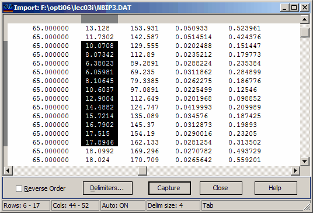

Text Data Import
Text Data Import
Navigation: OptiLayer Menu Commands > Edit Menu >
Text Data Import
` <idh_grid_generator.html>`__ ` <idh_menu_edit.html>`__ ` <idh_import_options.html>`__
This utility allows you to easily import numeric data from any ASCII file (the source file) and insert it into the selected column of an OptiLayer data file (the target file - not to be confused with the Target data file). The Import utility is located in the Edit menu, and it can also be accessed with the F9 keystroke.
To use the utility, open a data file in one of the databases accessible from the Data menu. Then, place the mouse cursor in the column of the data file to be edited and either click the Import command in the Edit menu or press the F9 key. The Import Data dialog box will open, and you can locate and open the text file that will serve as the source file for the data to be imported using this dialog box. Once the source file is opened, its contents will be displayed in the Import window.

To select the data to be imported, place the mouse pointer at the upper left corner of the rectangle containing the data and press the left mouse button. While holding the button down, move the mouse to the lower right corner of the rectangle until all desired data is selected, then release the mouse button. You can also use the Shift key with mouse operations to hold the first selected corner during mouse movement. Keyboard keys such as F7 (Mark), Home, End, Page Up, Page Down, and Arrows have their usual functions in selection. Please note that the Paste Buffer can only hold one data column at a time. If you select more than one data column at once in the source file, all the selected data will be stored in the Paste Buffer by rows (meaning all elements of the first row from left to right, followed by all elements of the second row, and so on). Since the captured data will be inserted into a single column of the target file, it is usually preferable to capture data in only one column of the source file at a time. Sometimes it may be convenient to import the selected data into the Paste Buffer in reverse order. You can do this by checking the box labeled “Reverse Order” at the bottom of the Import window. If the input ASCII file contains multiple columns of data, you can specify the delimiters between the values and align text columns properly before importing the data. Press the “Delimiters…” button to set ASCII Data Import Options.
If you are not satisfied with the selection, simply repeat the procedure. Once the selection contains the data you need, press the Capture button. All the selected data will be extracted and written into the Paste Buffer, which will be displayed on the screen once the data is captured. When transferring data from the Paste Buffer to the source file, the process will start with the data value that is highlighted in the data column of the Paste Buffer. There are several options available for transferring data from the Paste Buffer to the source file.